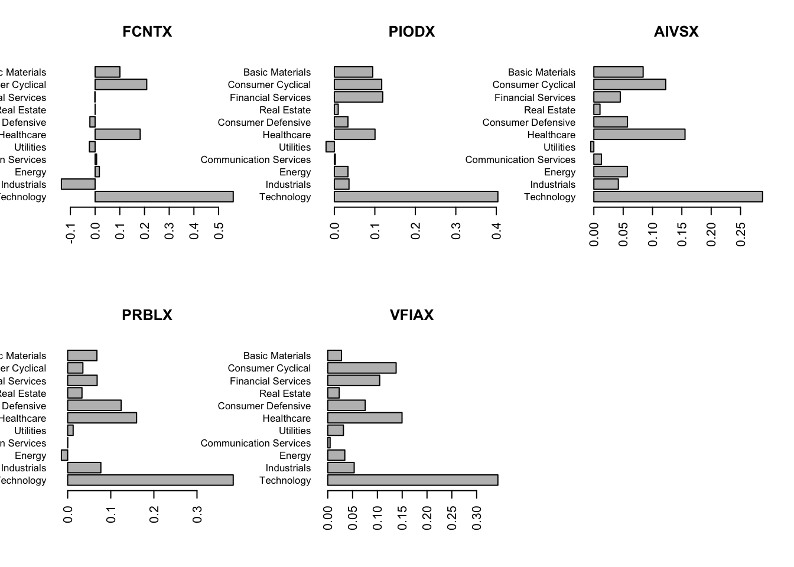

Chapter 20 Problem Set 5
20.1 Q1
Assume a market of \(N\) assets with returns following the 1-factor CAPM model \[ R_i=\beta R_M+\varepsilon_i, \quad i=1, \ldots, N \] where \(R_M \sim \mathrm{N}\left(\mu_M, \sigma_M^2\right)\) and \(\varepsilon_i \sim^{i . i . d .} \mathrm{N}\left(0, \sigma_{\varepsilon}^2\right), \quad \forall i\). Therefore, the model assumes all assets have the same systematic risk \(\left(\beta^2 \sigma_M^2\right)\) and the same idiosyncratic risk \(\left(\sigma_{\varepsilon}^2\right)\).
20.1.1 Part A
- Find the weights of the minimum-variance portfolio.
\[ \begin{aligned} \mathbf{R} &= \left[ \begin{array}{c} R_{1} \\ \vdots \\ R_{N} \end{array} \right] = \left[ \begin{array}{c} \beta \\ \vdots \\ \beta \end{array} \right] R_{M} + \left[ \begin{array}{c} \epsilon_{1} \\ \vdots \\ \epsilon_{N} \end{array} \right] \\ \\ \Sigma = \mathbb{V}(\mathbf{R}) &= \mathbb{V}(\beta\underline{1} R_{M} + \epsilon_{i})\\ &= \beta^{2} \underline{1} \mathbb{V}(R_{M}) \underline{1}^{T} + \mathbb{V}(\epsilon_{i}) \mathbf{I}\\ &= \beta^{2} \sigma_{M}^{2} \left[ \begin{array}{ccc} 1 & \dots & 1 \\ \vdots & \ddots{} & \vdots \\ 1 & \dots & 1 \end{array} \right] + \left[ \begin{array}{cccc} \sigma_{\epsilon}^{2} & 0 & \dots & 0 \\ 0 & \sigma_{\epsilon}^{2} & \dots & 0 \\ \vdots & & \ddots & \vdots \\ 0 & 0 & \dots & \sigma_{\epsilon}^{2} \end{array} \right] \\ &= \left[ \begin{array}{ccc} \beta^{2} \sigma_{M}^{2} + \sigma_{\epsilon}^{2} & \dots & \beta^{2} \sigma_{M}^{2} \\ \vdots & \ddots & \vdots \\ \beta^{2} \sigma_{M}^{2} & \dots & \beta^{2} \sigma_{M}^{2} + \sigma_{\epsilon}^{2} \end{array} \right] \\ \end{aligned} \]
The minimum variance portfolio weights as calculated in class are: \[ w^{*} = \frac{\Sigma ^{-1} \underline{1}}{\underline{1}^{T}\Sigma ^{-1} \underline{1}} \]
By symmetry of the variance matrix, all the weights must be equal, implying \(w = \frac{1}{N} \underline{1}\). Each row sum of the matrix is also equivalent, as intuitively all the assets follow the same distribution and have the same systematic risk. It also means that changing the order of the assets in the vector \(\mathbf{R}\) does not change the covariance matrix.
20.1.2 Lemma for special inverse covariance matrices
Given that \(a,b > 0\) \[ \boldsymbol{\Sigma}=a \mathbf{1 1}^T+b \boldsymbol{I}=\left[\begin{array}{ccc} a & \ldots & a \\ \vdots & \ddots & \vdots \\ a & \cdots & a \end{array}\right]+\left[\begin{array}{ccc} b & \ldots & 0 \\ \vdots & \ddots & \vdots \\ 0 & \cdots & b \end{array}\right] \] then \[ \boldsymbol{\Sigma}^{-1}=c \mathbf{1 1}^T+d \boldsymbol{I}=\left[\begin{array}{ccc} c & \ldots & c \\ \vdots & \ddots & \vdots \\ c & \cdots & c \end{array}\right]+\left[\begin{array}{ccc} d & \ldots & 0 \\ \vdots & \ddots & \vdots \\ 0 & \cdots & d \end{array}\right] \] where \(c = -\frac{1}{b} \frac{a}{Na+b}\) and \(d = \frac{1}{b}\)
20.1.3 Part B
- Show that the minimum variance can never be smaller than \(\beta^2 \sigma_M^2\), no matter how many assets we have (i.e., no matter how large \(N\) is).
\[ \begin{aligned} \mathbb{E}\left[R_{m v}\right] & =\mathbb{E}\left[\boldsymbol{w}^T \boldsymbol{R}\right]=\boldsymbol{w}^T E[\boldsymbol{R}]=\frac{1}{N} \mathbf{1}^T\left(\beta \mu_M \mathbf{1}\right) \\ & =\beta \mu_M \frac{\mathbf{1}^T \mathbf{1}}{N}=\beta \mu_M \quad\left(\text { since } \mathbf{1}^T \mathbf{1}=N\right) \\ \\ \mathbb{V}\left[R_{m v}\right] & =\mathbb{V}\left[\boldsymbol{w}^T \boldsymbol{R}\right]=\boldsymbol{w}^T \mathbb{V}[\boldsymbol{R}] \boldsymbol{w}=\frac{1}{N^2} \mathbf{1}^T\left(\beta^2 \sigma_M^2 \mathbf{1 1}^T+\sigma_{\varepsilon}^2 \boldsymbol{I}\right) \mathbf{1}= \\ & =\frac{\beta^2 \sigma_M^2}{N^2}\left(\mathbf{1}^T \mathbf{1}\right)\left(\mathbf{1}^T \mathbf{1}\right)+\frac{\sigma_{\varepsilon}^2}{N^2}\left(\mathbf{1}^T \mathbf{1}\right)=\beta^2 \sigma_M^2+\frac{\sigma_{\varepsilon}^2}{N}>\beta^2 \sigma_M^2, \forall N \geq 1 \end{aligned} \]
Thus, the minimum variance portfolio will always have variance at least \(β^{2}\sigma_{M}^{2}\). This problem illustrates that you cannot “diversify away” systemic risk (i.e., risk from common factors) the same way you can with idiosyncratic risk.
20.2 Q2
Consider the following 2 -factor model with 3 assets: \[ \left[\begin{array}{l} R_1 \\ R_2 \\ R_3 \end{array}\right]=\left[\begin{array}{ll} 1 & 0 \\ 1 & 1 \\ 0 & 1 \end{array}\right]\left[\begin{array}{l} F_1 \\ F_2 \end{array}\right]+\left[\begin{array}{l} \varepsilon_1 \\ \varepsilon_2 \\ \varepsilon_3 \end{array}\right] \Leftrightarrow \boldsymbol{R}=\boldsymbol{\beta}^{\top} \boldsymbol{F}+\boldsymbol{\varepsilon} \] where \[ \mathbb{V}[\boldsymbol{F}]=\left[\begin{array}{cc} \sigma^2 & 0 \\ 0 & \sigma^2 \end{array}\right]=\sigma^2 \boldsymbol{I}_2, \quad \mathbb{V}[\varepsilon]=\left[\begin{array}{ccc} \sigma^2 & 0 & 0 \\ 0 & \sigma^2 & 0 \\ 0 & 0 & \sigma^2 \end{array}\right]=\sigma^2 \boldsymbol{I}_3, \quad \operatorname{Cov}[\boldsymbol{\varepsilon}, \boldsymbol{F}]=0 \] Find the minimum variance portfolio weights for this model. (Hint: You can use \(\mathrm{R}\) to invert the matrix.)
From class, \[ w^{\star} = \frac{\Sigma ^{-1} \underline{1}}{\underline{1}^{T}\Sigma^{-1} \underline{1}} \]
So we first need to find \(\Sigma\). \[ \begin{aligned} \Sigma &= \mathbb{V}(\mathbf{\beta^{T}F+\epsilon})\\ &= \mathbf{\beta}^{T}\mathbb{V}(\mathbf{F})\mathbf{\beta} + \mathbb{V}(\mathbf{\epsilon})\\ &= \sigma^{2} \mathbf{\beta^{T}}\mathbf{I}\mathbf{\beta} + \sigma^{2}\mathbf{I_{3}}\\ &= \sigma^{2} \left[\begin{array}{ll} 1 & 0 \\ 1 & 1 \\ 0 & 1 \end{array}\right]\left[\begin{array}{lll} 1 & 1 & 0 \\ 0 & 1 & 1 \end{array}\right] + \sigma^{2}\left[\begin{array}{lll} 1 & 0 & 0\\ 0 & 1 & 0\\ 0 & 0 & 1 \end{array}\right]\\ &= \sigma^{2} \left[\begin{array}{lll} 1 & 1 & 0 \\ 1 & 2 & 1 \\ 0 & 1 & 1 \end{array}\right] + \sigma^{2}\left[\begin{array}{lll} 1 & 0 & 0\\ 0 & 1 & 0\\ 0 & 0 & 1 \end{array}\right]\\ &= \sigma^{2}\left[\begin{array}{lll} 2 & 1 & 0 \\ 1 & 3 & 1 \\ 0 & 1 & 2 \end{array}\right] = \left[\begin{array}{lll} 2\sigma^{2} & 1\sigma^{2} & 0 \\ 1\sigma^{2} & 3\sigma^{2} & 1 \sigma^{2}\\ 0 & 1\sigma^{2} & 2\sigma^{2} \end{array}\right] \end{aligned} \] Solving with R, we get \(\Sigma ^{-1}\) \[ \Sigma ^{-1} = \left[ \begin{array}{ccc} 0.625 & -0.25 & 0.125 \\ -0.250 & 0.50 & -0.250\\ 0.125 & -0.25 & 0.625 \end{array} \right] \]
So the weights become:
\[ w^{\star} = \frac{\left[ \begin{array}{ccc} 0.5 & 0.0 & 0.5 \end{array} \right]}{1} = \left[ \begin{array}{ccc} 0.5 & 0.0 & 0.5 \end{array} \right] \] which means that we split our portfolio equally between the 1st and 3rd assets. Notice that the \(R_{1}\) and \(R_{3}\) are uncorrelated, so splitting (or “diversifying”) the portfolio between these uncorrelated assets will give the highest reduction in variance.
These questions encompass q5-15 on pg 489 from SDAFE 18.8
20.3 Q3
Suppose one has a sample of monthly log returns on two stocks with sample means of 0.0032 and 0.0074, sample variances of 0.017 and 0.025, and a sample covariance of 0.0059. For purposes of resampling, consider these to be the “true population values.” A bootstrap resample has sample means of 0.0047 and 0.0065, sample variances of 0.0125 and 0.023, and a sample covariance of 0.0058.
20.3.1 Part A
Using the resample, estimate the efficient portfolio of these two stocks that has an expected return of 0.005; that is, give the two portfolio weights.
\[ \begin{aligned} 0.005 &= \mathbb{E}(wS_{1}+(1-w)S_{2}) = w\cdot 0.0047 + (1-w) \cdot 0.0065\\ 0.005-0.0065&= w(0.0047-0.0065)\\ w &= \frac{0.005-0.0065}{(0.0047-0.0065)}\\ &= 0.8333\\ 1-w &= 0.1667 \end{aligned} \]
For some reason, the answers state: (0.0047)w + (0.0065)(1 − w) = 0.005 so that the estimated efficient portfolio is 57.14% stock 1 and 42.86% stock 2.
20.3.2 Part B
What is the estimated variance of the return of the portfolio in part (a) using the resample variances and covariances?
\[ \begin{aligned} \mathbb{V}(wS_{1}+(1-w)S_{2}) &= w^{2}\mathbb{V}(S_{1})+(1-w)^{2}\mathbb{V}(S_{2})+2w(1-w)Cov(S_{1},S_{2})\\ &= w^{2}.0125 + (1-w)^{2}\cdot 0.023 + 2w(1-w)0.0058\\ &= 0.01092 \end{aligned} \]
20.3.3 Part C
What are the actual expected return and variance of return for the portfolio in (a) when calculated with the true population values (e.g., with using the original sample means, variances, and covariance)?
\[ \begin{aligned} \mathbb{E}(R_{act}) &= 0.8333 \cdot 0.0032 + .16667\cdot 0.0074 = 0.0038\\ \mathbb{E}(R_{act}) &= .8333^2 \cdot 0.0032+0.16667^{2}\cdot 0.0074 + 2\cdot 0.8333 \cdot 0.16667 \cdot 0.0059\\ &=0.00406 \end{aligned} \]
20.4 Q4
Straight from answer key
For this problem you will use regression to identify the composition of various mutual funds.
20.4.1 Part A
Download the adjusted daily closing prices from Jan 1 2020 to Dec 31 2022 for the 5 mutual funds below (use tseries::get.hist.quote() for each ticker):
- FCNTX: Fidelity Contrafund
- PIODX: Pioneer A
- AIVSX: American Funds Invmt Co of Amer A
- PRBLX: Parnassus Core Equity Investor
- VFIAX: Vanguard 500 Index Admiral
Note that each of these funds has at least 90% of their weight in the US stocks market. You can actually check the composition of the investment over different stock sectors from Yahoo Finance, under the fund’s holdings tab; e.g. for FCNTX at https://finance.yahoo.com/quote/FCNTX/holdings.
library(tseries)
N = 5
funds = c("FCNTX", "PIODX", "AIVSX", "PRBLX", "VFIAX")
P = list()
for(i in 1:N){
P[[i]] = tseries::get.hist.quote(funds[i],
start = as.Date("2020-01-01"),
end = as.Date("2022-12-31"),
quote="AdjClose",
compression = "d",
quiet = T)
}
R_mut=lapply(P, FUN = function(x){ diff(x) /stats::lag(x,-1) }) # calculate MF returns
m_funds = matrix(unlist(R_mut), ncol=N)
colnames(m_funds) = funds20.4.2 Part B
Assume you do not have any information about the investment strategy of the funds. Download the daily prices and calculate returns of the following EFTs, which track different sectors of the economy: - XLB: Basic Materials - XLY: Consumer Cyclical - XLF: Financial Services - VNQ: Real Estate - XLP: Consumer Defensive - XLV: Healthcare - XLU: Utilities - XTL: Communication Services - XLE: Energy - XLI: Industrials - XLK: Technology Regress each of the mutual fund returns on the above ETF returns and create barplots of the estimated beta coefficients. Do these accurately reflect the allocation over the different sectors (as described in Yahoo Finance)?
etfs = c("XLB", "XLY", "XLF", "VNQ", "XLP", "XLV", "XLU", "XTL","XLE", "XLI", "XLK")
sectors = c("Basic Materials","Consumer Cyclical","Financial Services",
"Real Estate","Consumer Defensive", "Healthcare", "Utilities",
"Communication Services", "Energy", "Industrials", "Technology")
M = length(etfs)
length(sectors)## [1] 11ETFS = list()
for(i in 1:M){
ETFS[[i]] = tseries::get.hist.quote(etfs[i],
start = as.Date("2020-01-01"),
end = as.Date("2022-12-31"),
quote="AdjClose",
compression = "d",
quiet = T)
}
R_etf = lapply(ETFS, FUN=function(x){ diff(x) / stats::lag(x,-1)})
m_etfs = matrix(unlist(R_etf), ncol = M)
colnames(m_etfs) = etfs
par(mfrow=c(2,3))
out=list();
for(i in 1:N){
out[[i]]=lm(m_funds[,i] ~ m_etfs)
weights = out[[i]]$coef[-1]
barplot( rev(weights), names.arg = rev(sectors), main = funds[i],
horiz = TRUE, las = 2, cex.names = .8)
}
The barplots of the regression coefficients (betas) roughly follow the sector weightings for each fund. Nevertheless, they are not always close in actual value (e.g. in some cases the betas are negative, even though weightings are positive). The differences can be due to the fact that we use ETFs as proxies for a sector, but the actual holding of the fund within the sector might be different. Moreover, there will be estimation error in our regression model, which is only based on the last year’s returns.
Nevertheless, it is quite impressing that we can (approximately) identify the strategy of a fund, without knowing anything beyond its past returns. This approach works because of the linear formula for net portfolio returns: \[ R_p = w_1 R_1 + \cdots + w_N R_N\]
Regressing portfolio returns on other assets, we can estimate the weights, assuming the portfolio composition is constant.
20.4.3 Part C
Compare the performance of the mutual funds to that of a portfolio of ETFs by reporting the value of Jensen’s alpha (based on the regressions from the previous part) and its corresponding p-value.
alpha=p.val=rep(0,N)
for(i in 1:N){
alpha[i]=out[[i]]$coefficients[1]*250 # annualized Jensen alpha
p.val[i]=summary(out[[i]])$coefficients[1,4] # first coef (alpha)'s p-val
}
cbind(alpha, p.val)## alpha p.val
## [1,] -0.03766 0.251
## [2,] -0.01396 0.557
## [3,] -0.02970 0.144
## [4,] -0.01708 0.458
## [5,] -0.00494 0.609All the funds’ alphas are negative, although their p-values are not very small. A likely cause for this is that funds charge a fee which consistently eats up some of the returns of their constituent assets. ETFs have typically lower fees than mutual funds, but our regression does not account for transaction costs (it is more costly to buy multiple assets than a single one), so the comparison is more nuanced.
Note that you can find Jensen alphas and other performance measures (e.g., Sharpe & Treynor Ratios) for assets in Yahoo! Finance under the risk tab. These metrics are based on the CAPM/Market factor model, by regressing the asset’s returns on a proxy for the market return (e.g., S&P500).